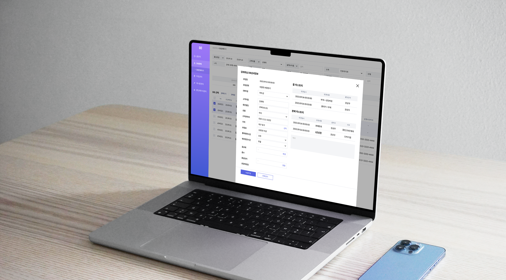
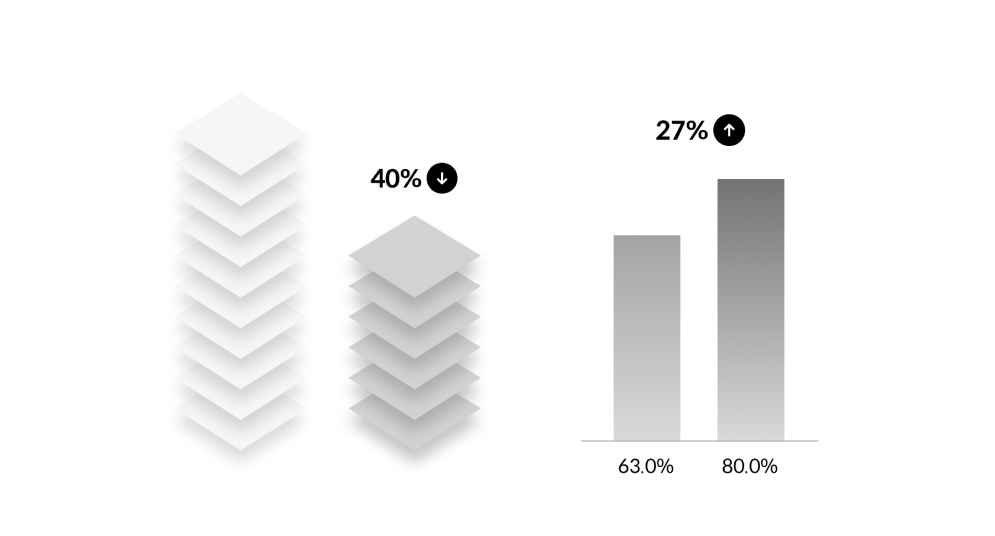
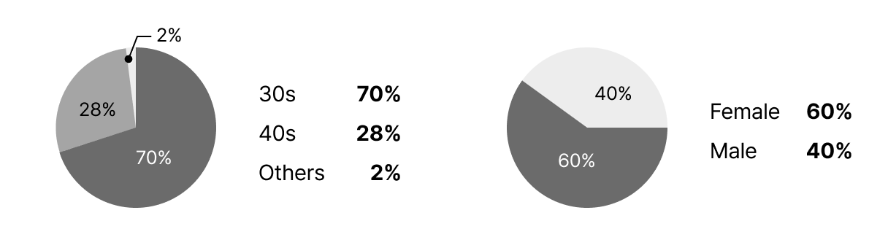
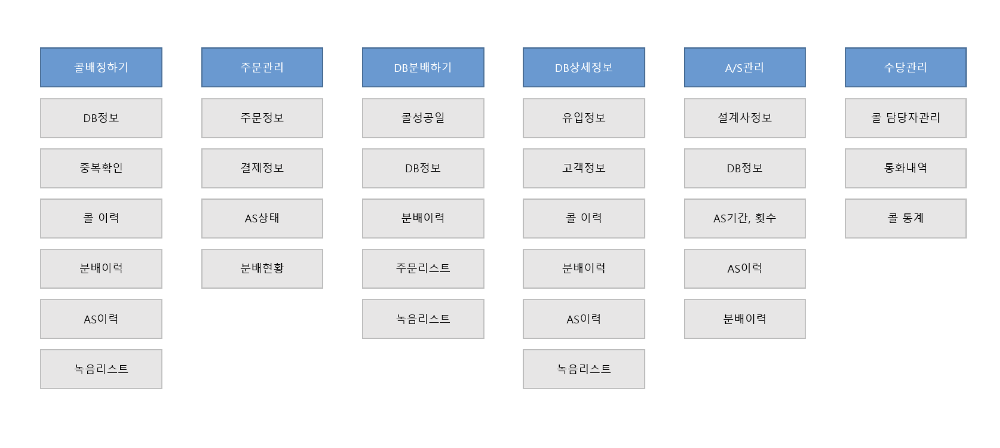
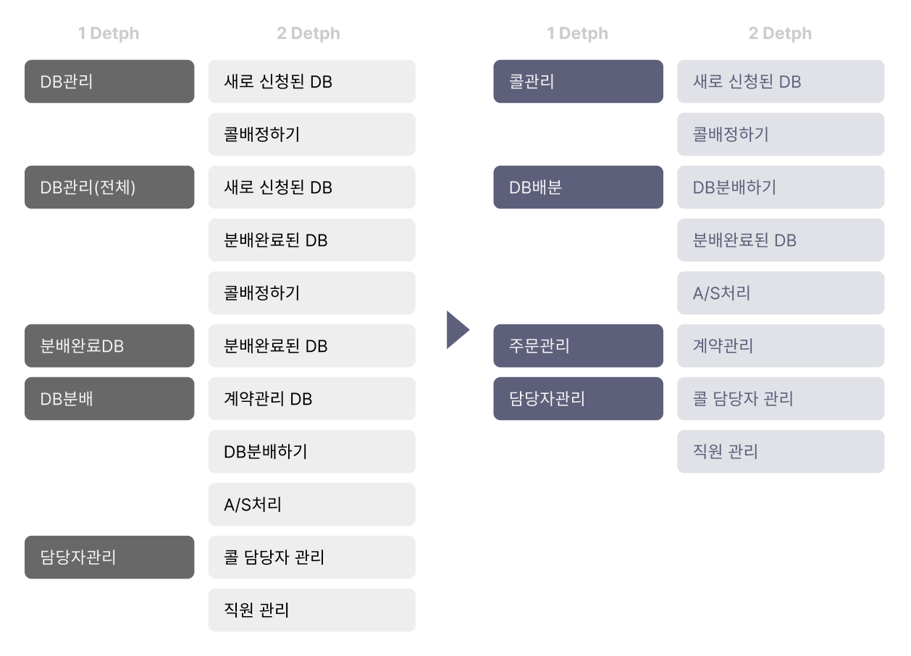
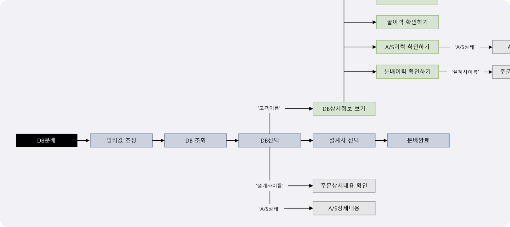
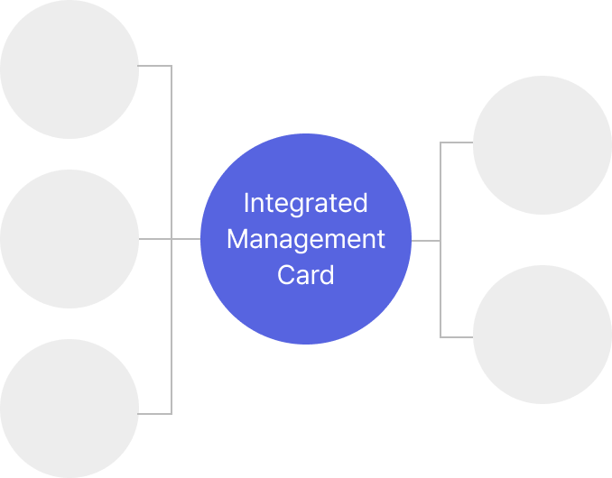
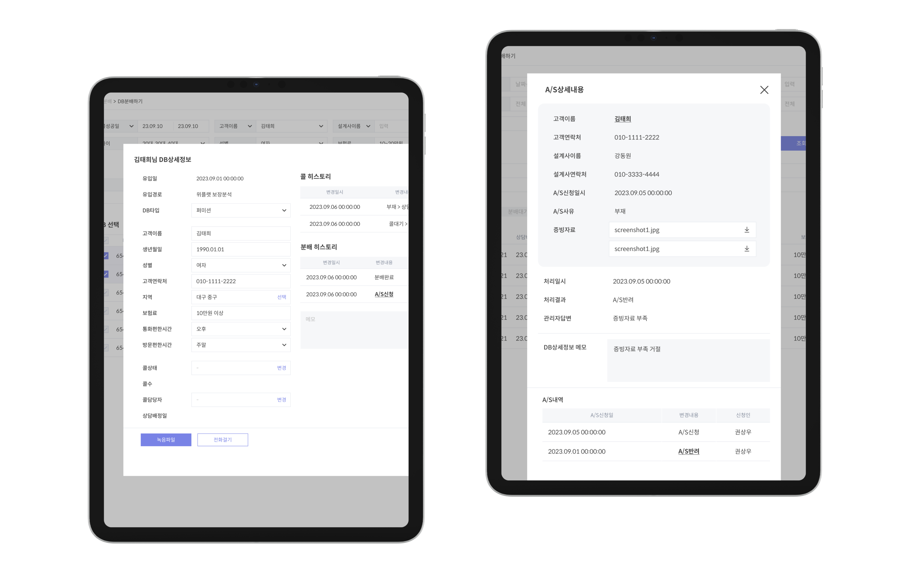
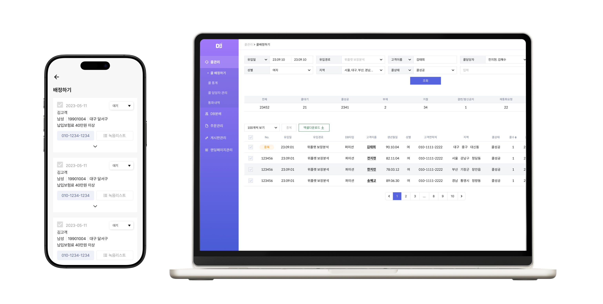

Customer Assignment & Management System

A UX redesign of the internal system that manages leads from ads and assigns them to planners for consultations and contracts. We analyzed employee usage patterns, restructured workflows, and rebuilt the system for better efficiency.
Collaboration was streamlined by integrating all communication and file sharing into one Figma-based workflow.
As a result, document volume and communication steps were reduced by over 40%, and user satisfaction increased by 27%.

User Research & Workflow Optimization
- Defined key problems through surveys, interviews, and user observation.
UX Design
- Redesigned UX flows and main interface screens.
- Organized communication tools and document templates, unifying collaboration channels.
Different Roles Require Different Features and Information
Depending on the user’s job role and workflow context, the required features and information vary.
However, the current system doesn’t fully support these differences, causing inconvenience and frequent user errors.
Participants: Internal assignment staff and managers

Main tasks and features used
- I wish the system automatically notified me of new A/S requests so I don’t have to search for them manually. It’s inconvenient to move between multiple screens, and I often make mistakes.
- The list is too complex and hard to read. It’s annoying to repeatedly reset filters like age or region.
- If there are previous requests or consultations, I have to search and check those records separately.
- It would be great to mark or manage key agents or important clients separately.
- It’s difficult to check information while driving or working outside the office.
- Customer information, progress, and previous requests should be managed all in one place.
- The list view should show only the most essential information at first glance.
- I’d like to view past records instantly without searching separately.
- Checks and processes A/S requests manually by going through the entire list.
- Manages data separately using Excel sheets.
- Writes down important or urgent contracts by hand.
- Keeps manual notes since A/S details can’t be viewed after approval.
- Opens multiple windows at once because needed information is scattered across different screens.
- Feels it’s inefficient to switch between multiple screens for a single task.
- Feels uneasy without keeping a separate Excel record.
Separated the workspace according to the nature of each task.
Senior Manager, overseeing overall assignments and managing the situation.
- Background: 12 years of experience at an insurance company
- Role: Assigns clients to agents
Quickly reviews basic client information and history, then assigns them to the appropriate agent. Monitors distribution status and manages performance and settlements.
“I want to manage my work efficiently in a short time. I just want to quickly see the information I need.”
- Feels it’s a waste of time to deal with unnecessary information.
- Lacks fast information filtering, which lowers work efficiency.
If she could view only the information she wants, summarized and organized, it could reduce time wasted on irrelevant details.
→ Provide a separate summarized page for quick call review
→ Add detailed information filtering features.
Junior Manager in charge of assigning clients and managing after-sales requests
- Background: 2 years of experience at an insurance company
- Role: Handles customer assignments and after-sales service (A/S)
Distributes assigned clients to the appropriate agents. Reviews submitted A/S requests and reassigns other clients as needed.
“I want to make sure I fully understand all the information so I don’t get lost or make mistakes.”
- Switching between multiple windows causes confusion and mistakes.
- Information needed for a single task is scattered, making it hard to manage.
If all relevant information could be viewed on a single integrated page, the risk of getting lost between multiple pages would be reduced.
→ Separate workflows for client assignment and A/S tasks.
→ Provide a unified customer information page.
→ Enable automatic linking through A/S history.
01. Restructuring Information Architecture and Folder Organization
For actual work processes, necessary information and functions were placed within easy reach. We created an information architecture tailored to each workflow scenario, reorganized the information, and updated the folder structure accordingly.


02. Updating the Distribution Process
The DB distribution scenario was revised to follow the actual workflow sequence, rather than the development order.

Consolidating Scattered Information
We redesigned the workflow and information architecture to match real task sequences, and built an integrated UI that lets users complete all steps—from reviewing history to assignment and processing—on a single screen. Now, information is instantly accessible and actionable, without switching screens.


Optimizing Interfaces for Speed and Accuracy
Quick assignments use a mobile interface with only key info, while desktop offers detailed filters by gender, region, and customer history. Optimizing the interface by context reduces manual sorting and boosts both speed and accuracy.
